.png)
História
A formação de Missal deu-se a partir do desmembramento do município de Medianeira e a data oficial de criação do município foi em 30 de dezembro de 1981, por meio da Lei Estadual n° 7.566. No dia 1º de fevereiro de 1983 foram empossados o primeiro Prefeito e os membros da Câmara de Vereadores; nesta data se comemora o aniversário de emancipação político-administrativa. Nome sugestivo e de conotações religiosas uma vez que a escolha deste nome é dedução do livro em que o sacerdote da Igreja Católica se orienta para o ofício religioso que é a Santa Missa. Como Missal teve o início de sua colonização orientada pelos bispos e 98% de seus moradores eram de religião católica, é natural que o nome MISSAL teve sua origem neste aspecto. Outro ponto turistico é o lago municipal de Missal, um lugar ótimo para se passar a tarde com a familia e amigos
 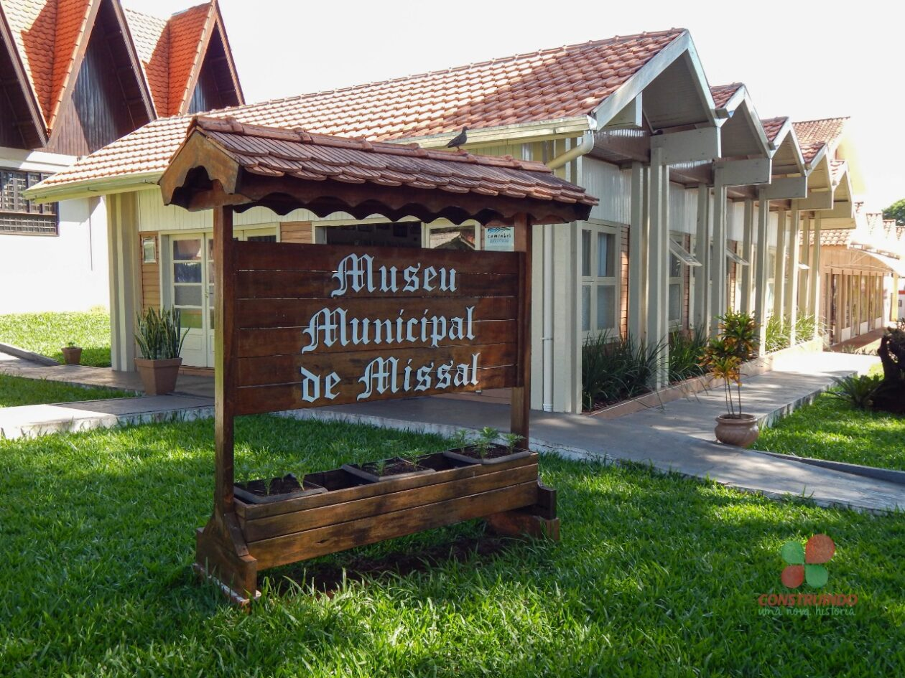 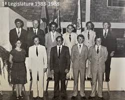
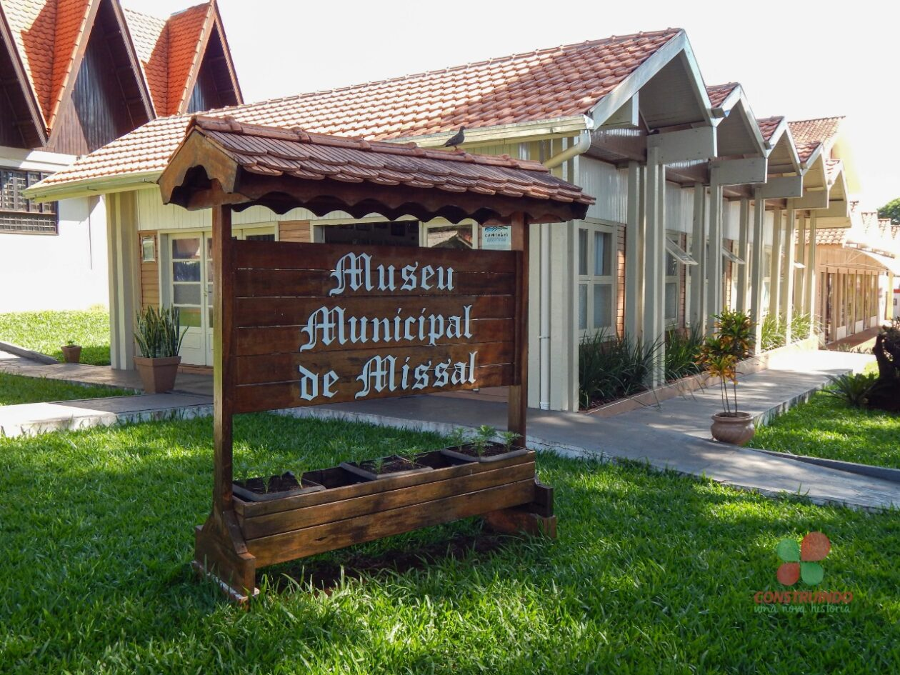 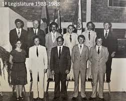
Turismo
Em relação à cultura e história, existem relíquias expostas no Museu Municipal. São objetos doados por famílias de pioneiros, à disposição para visitação em horário comercial ou com prévio agendamento. Missal tem, em sua área territorial, muitos espaços preservados, que podem ser apreciados pelos amantes da natureza ou do esporte, belas paisagens naturais e passeios náuticos junto ao Lago de Itaipu, além da cultura germânica demonstrada através das festas, da alimentação e das características físicas dos moradores. Tudo isto são atrativos imperdíveis. Na colonização de Missal desde o início predominou a população de origem germânica. Grande parte dos colonizadores que chegaram em 1962, eram da segunda geração de imigrantes alemães e trouxeram consigo características da cultura germânica expressas nas construções m chaimel, decorações, jardins floridos e na gastronomia. As tradições gaúchas são cultivadas no município por meio de festas, bailes, fandangos, rodeios de laço e churrascos.Localizado às margens do lago de Itaipu, distante 14 quilômetros da sede do Município, o Terminal Turístico de Vila Natal é um dos principais pontos turísticos de Missal. Recebeu este nome porque ali ficava a Vila Natal, cujos moradores foram indenizados com o alagamento de Itaipu. Anualmente, milhares de pessoas visitam o local, por ser considerado um local sossegado e agradável, com água de ótima qualidade, conforme análises do Instituto Ambiental do Paraná (IAP). Oferece local próprio para acampar, com muitas árvores, churrasqueiras, banheiros, quadra de esportes e um amplo pavilhão de festas, onde também são oferecidos refeições. 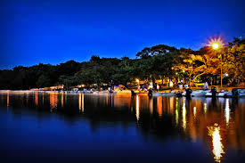
Cultura
A maioria dos colonizadores de Missal (1961 e 1962), pertence à 2ª geração de imigrantes alemães, que trouxeram consigo características da cultura germânica, expressas nas construções enxaimel, nos jardins floridos e na gastronomia, elementos que foram experimentando adaptações às especificidades locais no decorrer dos tempos. A Sipal Colonizadora, fundada pelo Padre José Backes, foi a grande responsável pela venda dos lotes e formação da cidade. Na época, somente famílias que pertenciam à religião Católica poderiam se instalar em Missal. Com orientação de Dom Geraldo Sigaud, líder dos Bispos na época, Pe. José Backes loteou a área de três mil alqueires, que se transformou no Município de Missal. Em relação à cultura e história, existem relíquias expostas no Museu Municipal. São objetos doados por famílias de pioneiros, à disposição para visitação em horário comercial ou com prévio agendamento. Missal tem, em sua área territorial, muitos espaços preservados, que podem ser apreciados pelos amantes da natureza ou do esporte, belas paisagens naturais e passeios náuticos junto ao Lago de Itaipu, além da cultura germânica demonstrada através das festas, da alimentação e das características físicas dos moradores. Tudo isto são atrativos imperdíveis. Na colonização de Missal desde o início predominou a população de origem germânica. Grande parte dos colonizadores que chegaram em 1962, eram da segunda geração de imigrantes alemães e trouxeram consigo características da cultura germânica expressas nas construções m chaimel, decorações, jardins floridos e na gastronomia. As tradições gaúchas são cultivadas no município por meio de festas, bailes, fandangos, rodeios de laço e churrascos.
Festas Tipicas Missalenses
Deutsches Fest: festa alemã realizada sem data fixa no município, conta com vários atrativos como o jogo do barril, concurso de chopp em metro, apresentações artísticas, jantares tipicamente germânicos e desfiles alegóricos. Reúne grande número de pessoas de toda a região e estado, que prestigiam a cultura germânica junto aos missalenses.
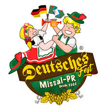 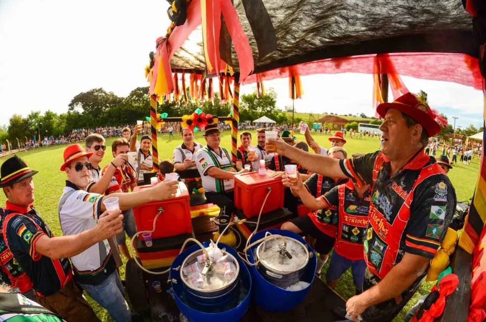Festa dos Navegantes: realizada anualmente no Terminal Turístico de Vila Natal, no início do mês de fevereiro. A Festa dos Navegantes é alusiva à emancipação de Missal.
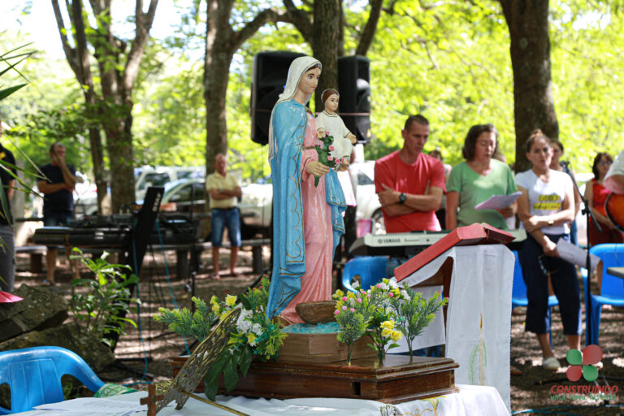 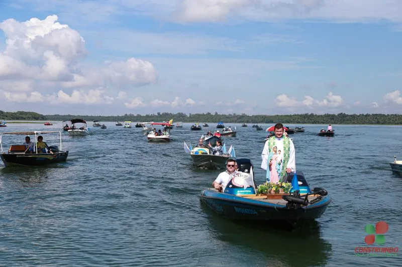Baile do Colono e do Motorista: o evento é uma forma de homenagear as pessoas que trabalham no campo ou como motoristas, resgatando a importância das duas profissões para o desenvolvimento de Missal. Realizado no mês de julho, para comemorar a data de fundação do município.
Pesca a Corvina: atraindo centenas de pescadores, o evento é destaque em Missal pela organização. Também realizada no Terminal Turístico de Vila Natal, sendo tradicional no Município.
Baile com escolha da Miss Missal: realizado anualmente em fevereiro ou julho, para escolher a representante da beleza da mulher missalense.
Café Colonial: com mais de 40 tipos de pratos coloniais servidos aos visitantes, o Café Colonial é um evento tradicional no Município, realizado no mês de junho.
Economia
A Secretaria Municipal de Finanças é responsável pela execução, coordenação e supervisão das políticas e programas do Município voltados ao lançamento, fiscalização e arrecadação de tributos municipais, preços públicos e outros créditos, conforme a seguir descrito:
- Formular e executar a política e a administração tributária, fiscal, financeira e orçamentária do Município;
- Efetuar a contabilidade em geral e administrar os recursos financeiros do Município;
- Fiscalizar e fazer a tomada de contas dos órgãos de administração centralizadas encarregados de movimentação de dinheiros e valores;
- Receber, pagar, guardar e movimentar os dinheiros e outros valores do Município;
- Preparar os balancetes, bem como o balanço geral e as prestações de contas de recursos transferidos para o Município por outras esferas de governo;
- Realizar estudos e pesquisas para previsão da receita, assim como tomar as providências executivas para a obtenção de recursos financeiros de origem tributária e outros;
- Lançar e cobrar a dívida ativa dos contribuintes;
- Executar o orçamento do Município pelo desembolso programado dos recursos financeiros alocados aos órgãos governamentais;
- Fiscalizar o cumprimento da legislação tributária do Município;
- Proceder à análise e à avaliação permanente da economia do Município;
- Expedir alvarás de funcionamento de empresas comerciais, industriais ou de prestação de serviços;
- Desenvolver outras atividades inerentes a Secretaria de Finanças, ou que forem determinadas pelo Prefeito Municipal
I Secretário de Finanças
II Diretor do Departamento de cadastro e Tributação a Chefe da Divisão de Cadastro e Tributação b Chefe de Divisão de Fiscalização
III Diretor do Departamento de Contabilidade a Chefe da Divisão de Contabilidade e Receita
IV Diretor do Departamento de Tesouraria
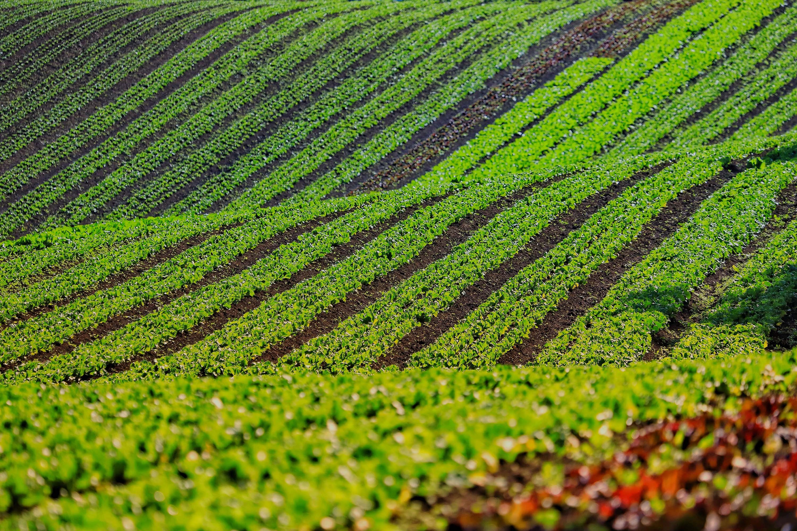 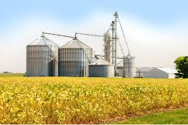